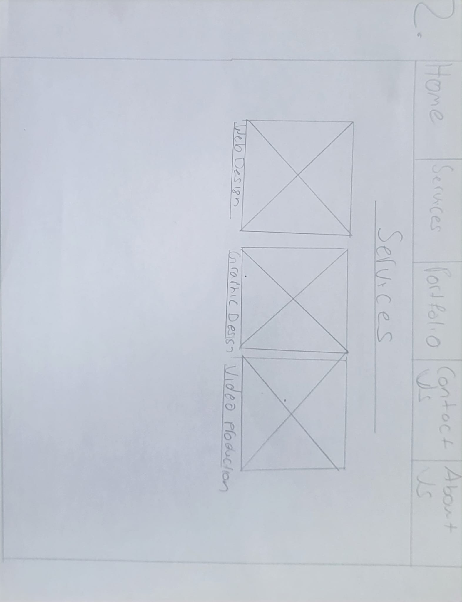
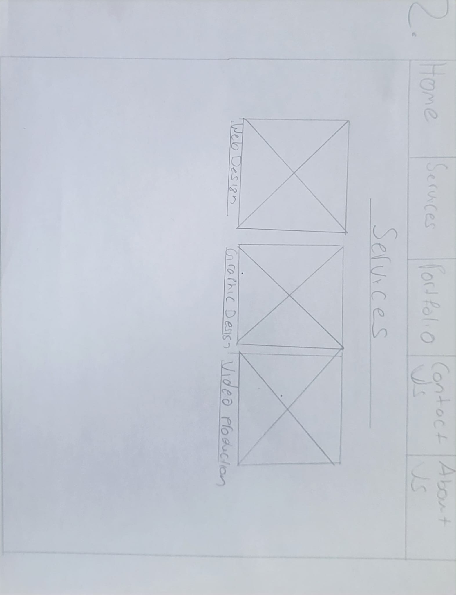

For this project I was thinking a lot to decide what type of project to do and then I thought I could do a video project since I did videography a lot before and it’s something that I am very good at. But, I didn’t know what new technology to use since I know most of the film technologies and some new technologies that are expensive. Then, I started thinking of another type of project that I can do using a new technology that I haven’t used before. Since I am also interested in Web Design, I decided to do a project on that. So far, in my past experience I was able to design a website and code it as well. But, for this project I just need to design it, instead of coding it myself. I wanted to use a new technology called Wix to create an actual website instead of me coding it. So, that’s what I decided to do.
As I mentioned before that main project goal is to design a website and use Wix to code it. But, I can’t just create a website for nothing, so it has to be for something. I always wanted to make a website for my freelance business that I intend to start after I graduate. So, I thought why not create that website for this assignment and there it all started. Before I started, I made a project goal and plan to achieve that goal by end of this semester. The first task is to start the design process, like think of a name for the business, type of services I will offer and such other things. At first, I thought of name called KV’s Solutions and developed some digital sketches of the logo and started doing paper sketches of the pages I like to have. Then the next task was to start creating a site on Wix. I also gave myself three weeks time for each task to complete. And I have to say that for most part, I have achieved it. And during that time, on a suggestion of a peer, I decided to change my business name to VK Creatives.
I started the creative process with designing a logo for my business and started with digital sketches of KV Solutions on Adobe Illustrator. Although I wasn’t fully satisfied with this logo, but I decided to use it for now. I just started playing around with colors and also added some icons.

Then, when I changed the business name to VK Creatives, I had to redesign the logo to the suit with new name, which I did on Adobe Illustrator, which came out like one below. Even with this one, I played around with colors since I wanted to represent that this business is all about creative works, like graphic design & web design.


I was completely satisfied with this design and started the next step.
After the logo was done, the next task was to sketch out the web pages. So, I started doing sketches of the main pages just to show the layout of the each page.
 


As you can see from these designs, they show how the navigation will look and where the images and texts will be placed. And they also show the basic layout of the each page. These were just sketches, but when I actually started to design a lot of things did change to make it better.
The third task was to start designing the site pages on a free program called Figma. I created most of the pages in Figma to show layout of the each page.


From these designs, you can see that I tried to make the site look like it’s intended for creativeness, since it is typically a creative business. I used image icons for the services I would like provide. I mainly used white as primary color for the whole site to give a feeling.
And for the home page, I used Toronto Skyline as primary image to go with the tagline “BEST IN TOWN, BEST IN ONTARIO”. And I think this image goes well with it.
And these designs were changed when I was actually creating this site on WIX depending on what things available on it.
- Adobe Illustrator – Used to design the logo.
- Adobe Photoshop – Used also design the logo.
- Figma – Used to design site pages.
- Wix (New Technology) – Used to create the actual site.


- YouTube (tutorials)
- Wix Help

So, finally I got started on creating a website in Wix. Since, this was the first time ever I used Wix to create a website, I didn’t know what to expect, but only knew it was a lot easier than coding. When I first got started with Wix, I had some trouble getting to know everything and how everything works. At first, I even got very frustrated as well, but soon, I learned how to get a grip on it.
I started using their own templates rather than designing my own, since I thought that would be easier, but I found that changing what is on the template was harder than it seems. I had some trouble with that. Then, I started using black screen and slowly started to build my own designs from starch in Wix. Then, slowly I was able to use some templates for my pages, like this one.>

I used pre-designed template for this page to get the grip of these things, like the images, sub-texts and header text. So, this made it easy to display all three different services I can offer.
I also used templates for pages as well like, Contact us, Previous Works, Graphic Design & Web Design pages.


After working on Wix for a while, I got hang of it, but there still a lot more to learn about Wix, than what I know now. But learning this program has helped me see how difficult it is coding the site than creating a site without coding.